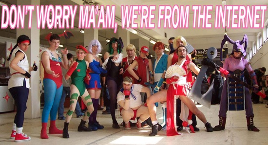
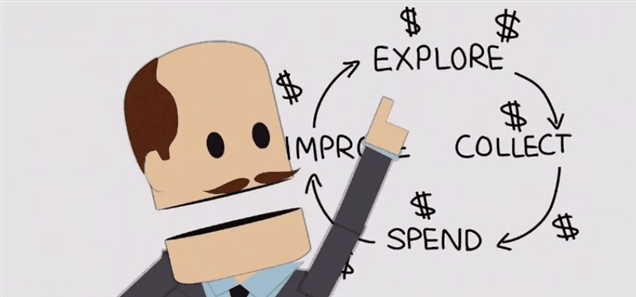
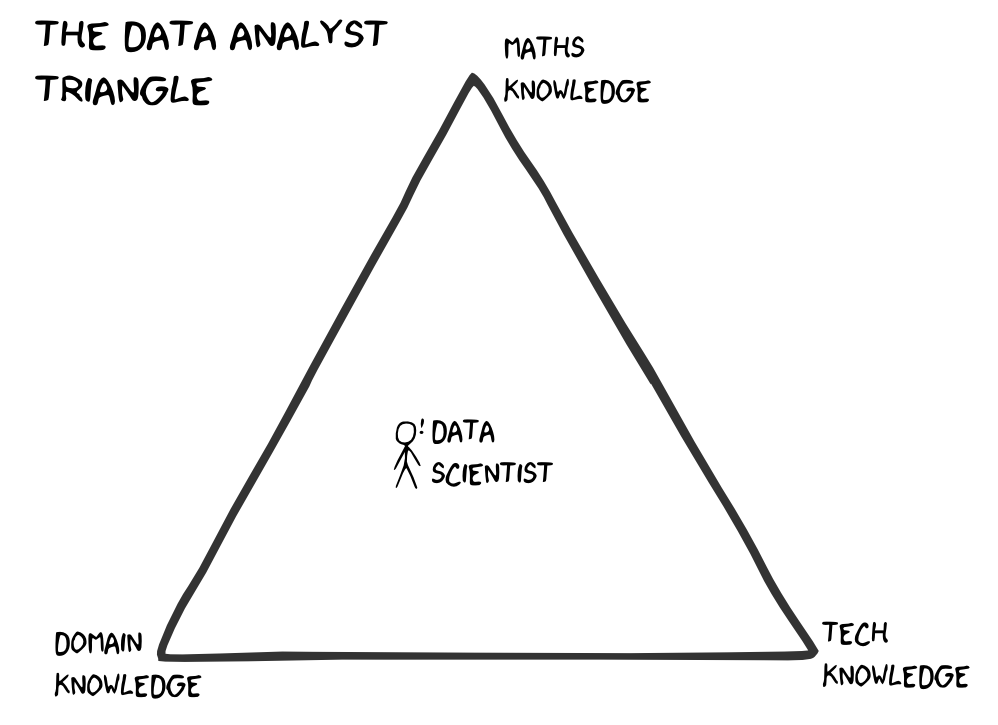
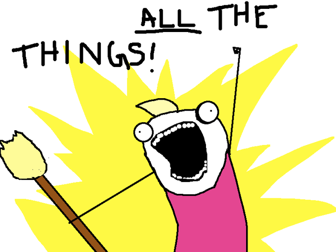

Game Analytics
a practical introduction
Christoph Safferling
Head of Game Analytics
Ubisoft Blue Byte
Ubisoft Blue Byte
- founded in 1988, best known for the Settlers and Anno brand
- fully acquired by Ubisoft in 2001
- online games since 2010
- newest title: Anno 2205 (PC)
Christoph Safferling
- since 2012: Head of Game Analytics at Blue Byte
- PhD in economics: Three Essays on the Economics of Online Games
- research specialties: personnel economics, incentive theory, industrial organisation
- academic papers available at repec.org
- contact:
- mail: christoph.safferling@ubisoft.com
- LinkedIn: https://www.linkedin.com/in/safferling
- Twitter: @safferli
- Github: @safferli
- this talk: https://github.com/safferli/introduction_gameanalytics
Live Operation Games
- large online component
- not only f2p games: hybrid and all (future) AAA games
- continuous updating and balancing of the game
- need for data

Free to Play
freemium: the '-mium' is Latin for 'not really'
Southpark, Season 18, Episode 6

- f2p is a business model, not a game type
- time vs money: opens game to a larger audience
- gives customers more impact on gameplay
- Extra Credits on
- Microtransactions https://www.youtube.com/watch?v=WXA559KNopI&hd=1
- Doing Free to Play Wrong https://www.youtube.com/watch?v=Mhz9OXy86a0&hd=1
But... I'm creative! I don't need data!

Why will you want data?
- market estimation/business case
- "even if you are prepared to wait for two and a half years to see the money come in, 69% of indie games are going to lose money" Cliff Harris
- no business case, no money
- game design
- confirm your expectations/calculations
- what do your players actually like?
- progression is one of the key GD principles... it's tricky and hard work!
Getting data
- internal vs. external data
- Google analytics (web, and many external pages)
- Steam Stats and Achievements
- mobile analytics (e.g. Flurry/Yahoo, Tune/HasOffers)
if you can only track few data points
- sales data (obviously!)
- progress meter (e.g. playerlevel, mainquest completion)
- playtime (of different modes)
Data Scientists
[A data scientist is] a high-ranking professional with the training and curiosity to make discoveries in the world of big data.
Data Scientist: the sexiest job of the 21st century, Harvard Business Review, Oct 2012


Skills sought after
- domain knowledge and experience
- "mitdenken": think and act independently, and ahead
- statistics and mathematics
- Linux and scripting, mostly R and Python
- database (SQL and NoSQL, Hadoop) knowledge
- communication and presentation skills

Game Analytics
- provide data, data support, and insights to all
- managers
- game designers
- marketing
- CRM/support
- LiveOps team (including programmers)
- educate on data and data usage
fancy shit!
- Shiny R: ACID mission dashboard
- Survival analysis: Anno 2205 event sessions
Conclusion
- modern games rely on data for game design (and monetisation)
- game analytics provides these data (with interpretations)
- cross-section of all game development departments